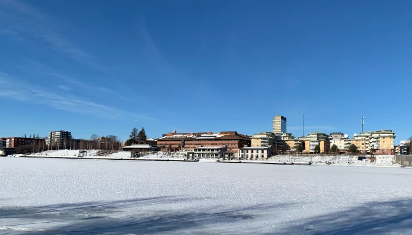

Skellefteå, Sweden is a town of approximately 75,000 people located in the Västerbotten region of northern Sweden. With Skellefteälven (Skellefteå River) as the central feature around which the town is built. It is home to exciting tourist attractions for any season of the year.
During the winter, you can enjoy art exhibits and museums, skiing and skating, or a chance to see the northern lights. In the warmer months, tourists come for the mild weather, salmon fishing, and hiking. We're confident Skellefteå has something you'll enjoy. To learn about the most up-to-date activities and events, subscribe to our newsletter using the link below.